This is a gallery of what I think are some pretty cool screenshots I've taken in Skyrim, using a ReShade known as Skyshade II ReShade, and put through some filters from the Photogramio online photo editor. I'll refrain from posting a modlist, as the list is constantly changing and keeping it updated will be nearly impossible.
 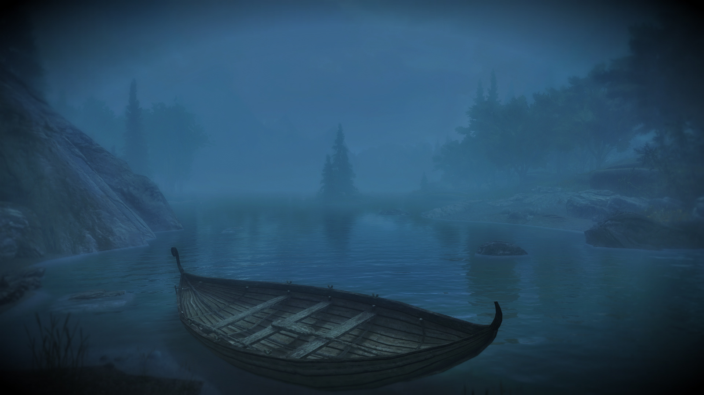
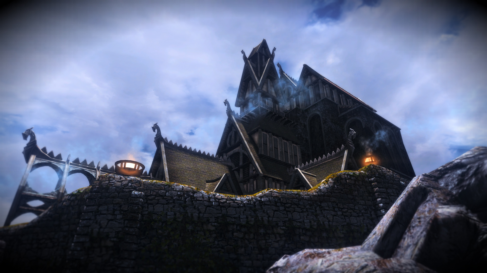
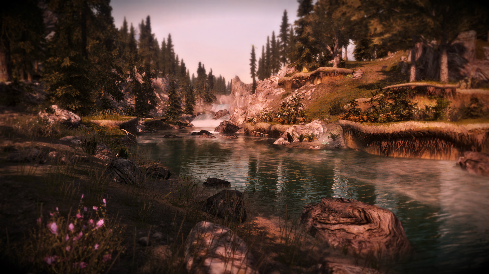
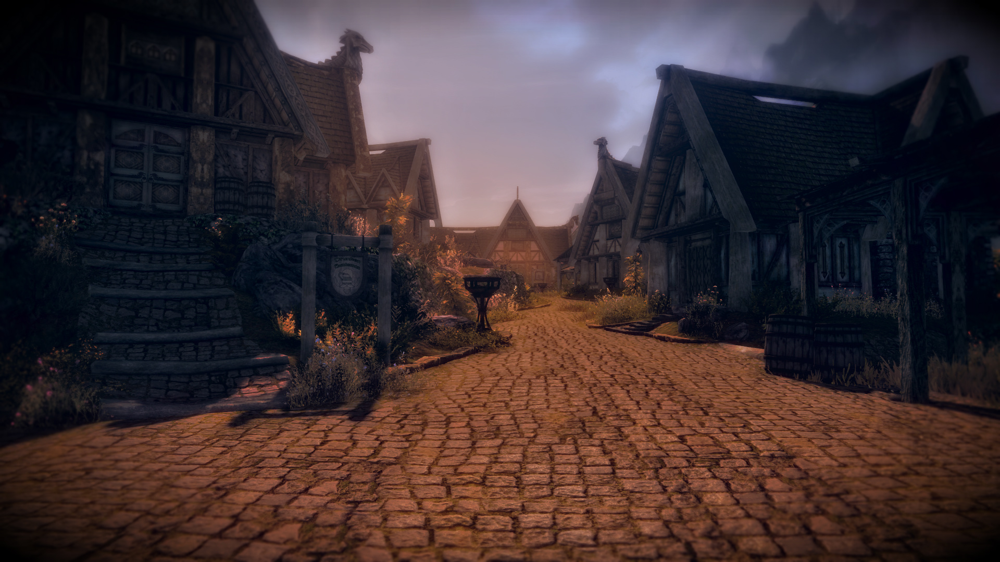
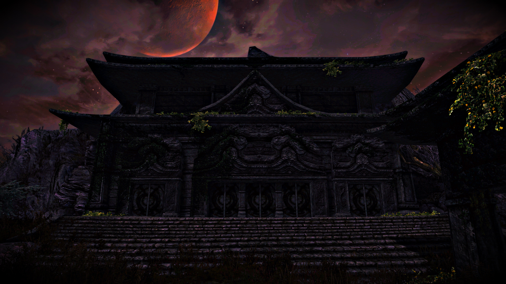
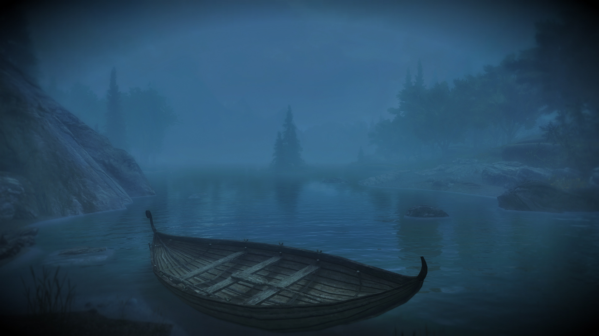
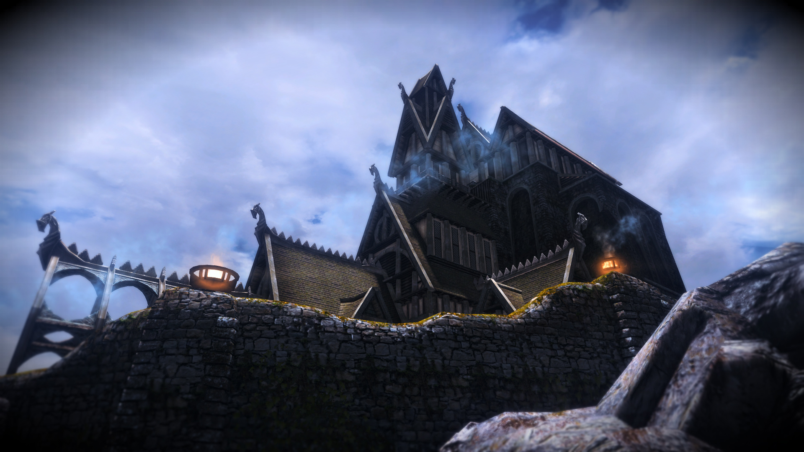
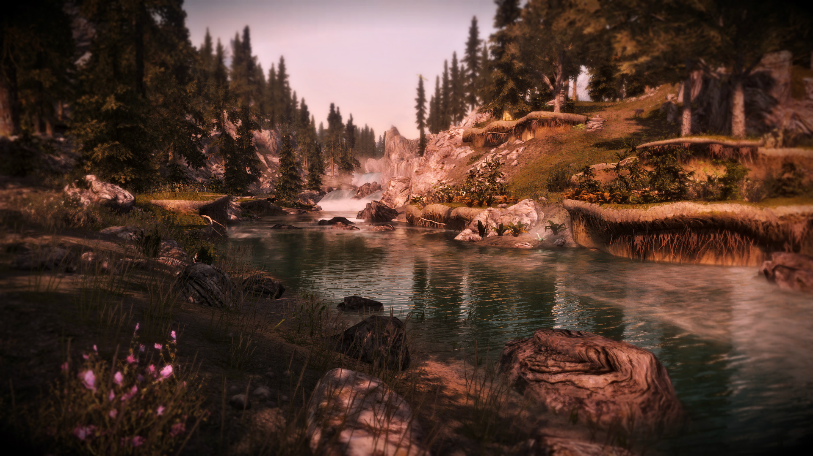
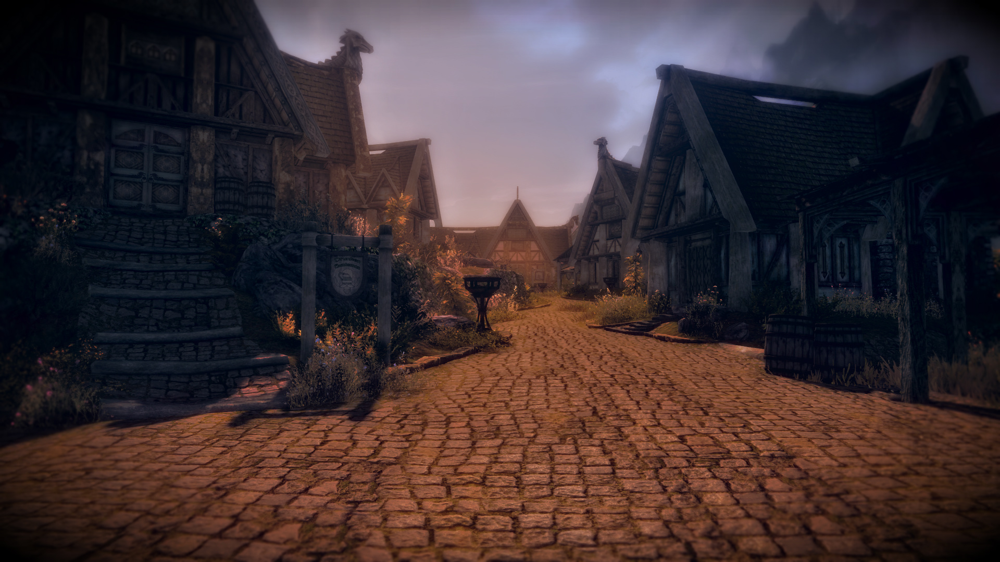
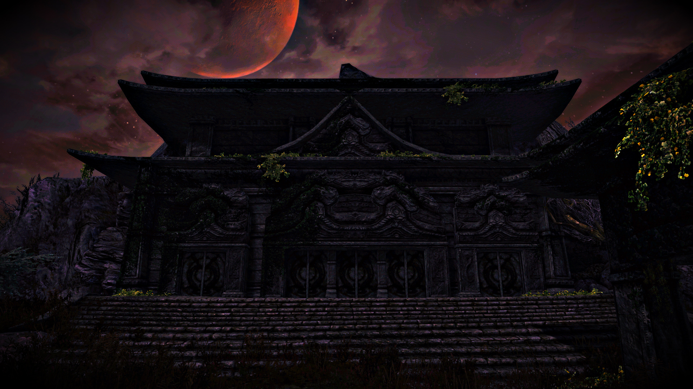

 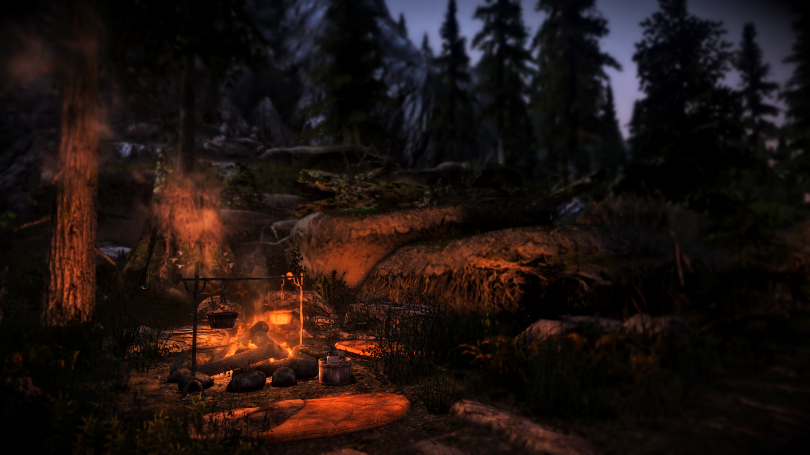
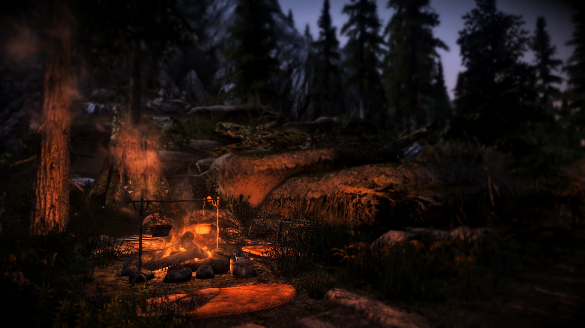

 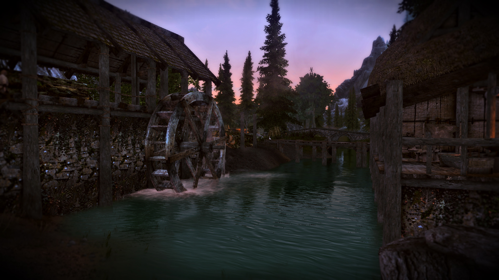
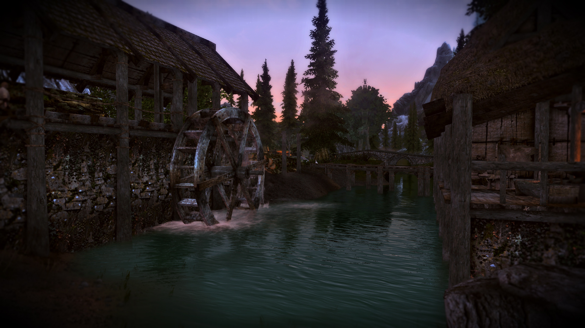